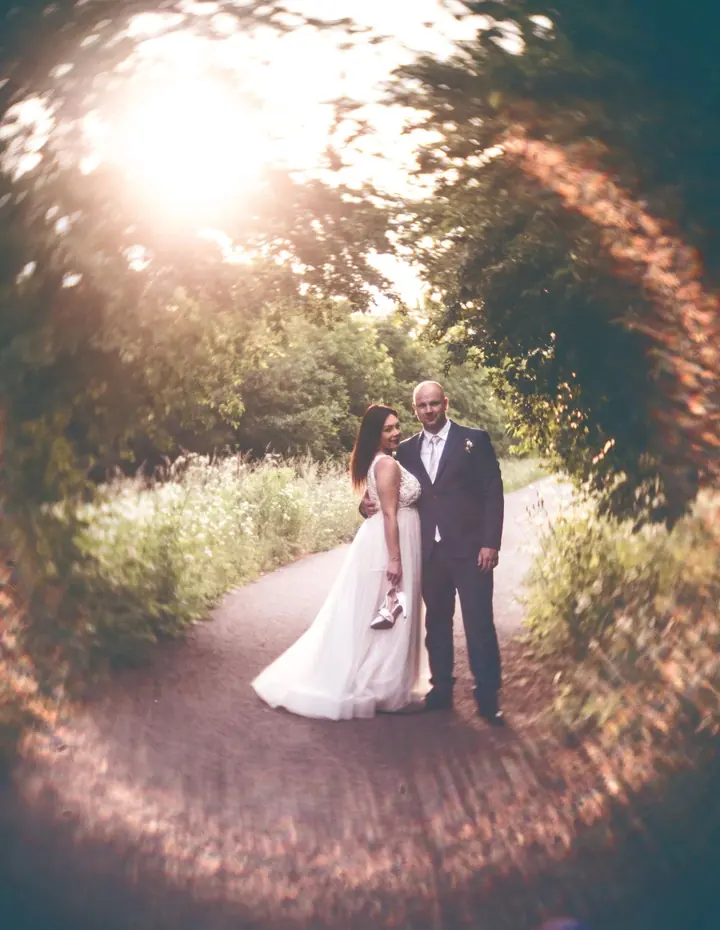
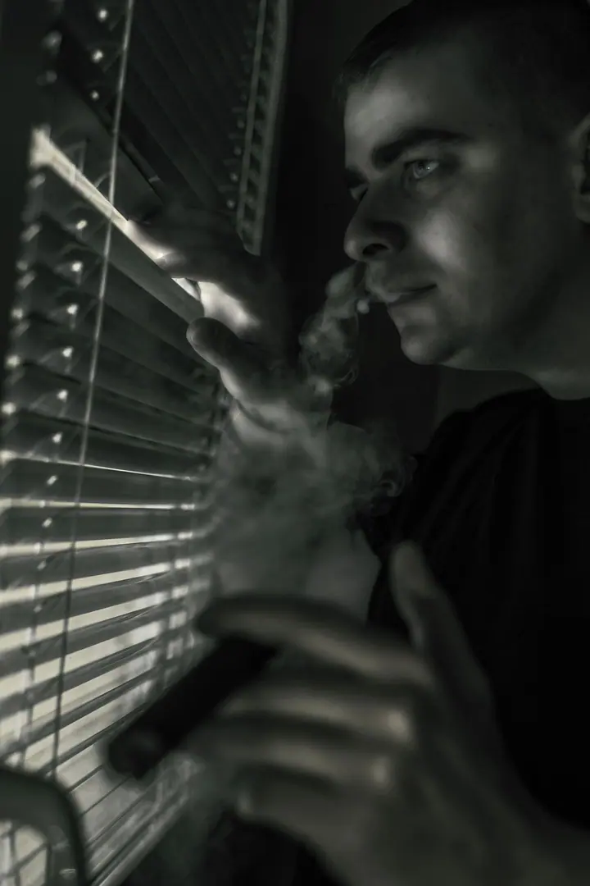
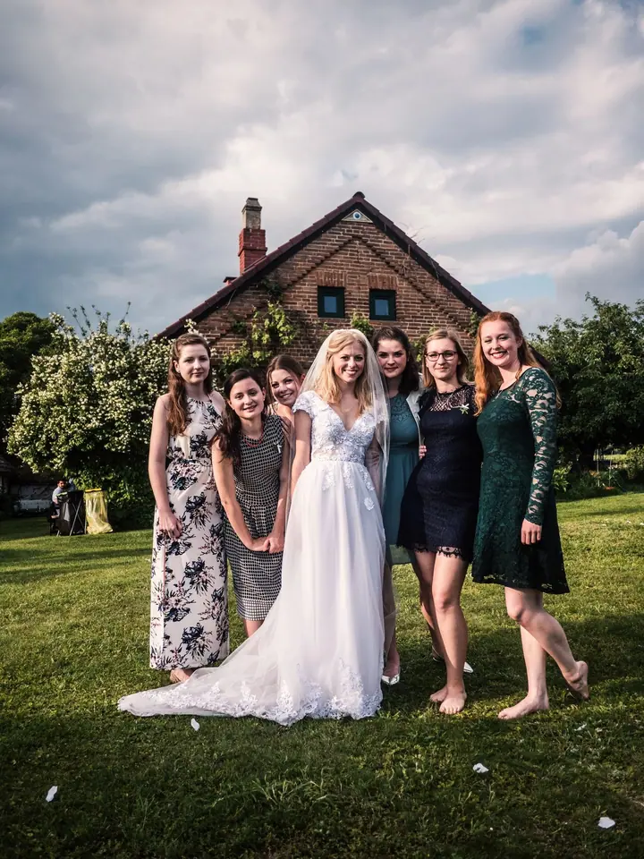
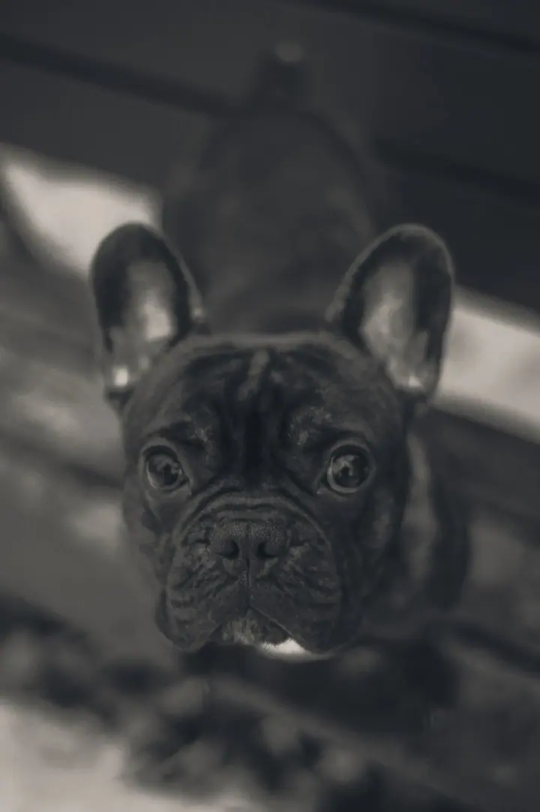
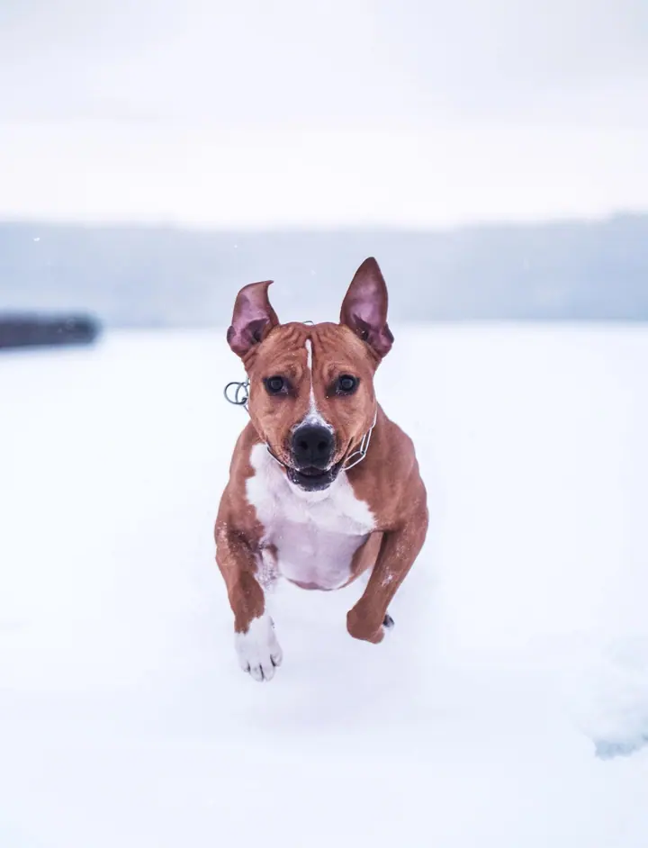
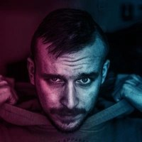

01 / 03
Svatby
Fotím celý den od příprav po večerní tanec, s důrazem na světlo a přirozené chvíle mezi vámi. Svatební focení začíná od 5 000 Kč.
Zeptat se na termín→




Svatby, akce a psi v pohybu
Zeptat se na termín →(01) Ahoj
Jmenuji se Zdeněk Vlček a fotím svatby , akce a psy na Náchodsku. Mám rád protisvětlo, výrazné barvy a chvíle, kdy se něco děje .
(02) Co fotím
01 / 03
Fotím celý den od příprav po večerní tanec, s důrazem na světlo a přirozené chvíle mezi vámi. Svatební focení začíná od 5 000 Kč.
Zeptat se na termín→02 / 03
Oslavy, večírky, koncerty i firemní akce. Fotím z davu, blízko lidí, aby z fotek byla cítit atmosféra.
Zeptat se na termín→03 / 03
Psi v pohybu, ve sněhu, v lese i doma. Nejradši je fotím venku, když běží naproti.
Zeptat se na termín→(04) Postup
Od první zprávy po hotovou galerii.
Krok 1 z 4
Napište mi termín, místo a co chcete fotit. Dám vědět, jestli mám volno.
Krok 2 z 4
Probereme průběh dne nebo akce, důležité momenty a co od fotek čekáte.
Krok 3 z 4
Přijedu, sleduji dění a fotím nenápadně. U psů počítám s tím, že chvíli potrvá, než si na mě zvyknou.
Krok 4 z 4
Snímky vyberu, upravím a pošlu vám je v elektronické podobě.
Nejlepší fotky vznikají, když se něco děje
(05) Za objektivem
Fotografie mě provází dlouho. Na DeviantArtu sdílím svoje snímky už 12 let a mám tam stovku fotek, od portrétů přes zvířata po krajiny z cest.
Na svatbách nechci nikoho stavět do strnulých póz. Raději hledám dobré světlo, nechávám vás být sami sebou a fotím, co se mezi vámi opravdu děje. Klidně zkusím i neobvyklý úhel.
Stejně rád fotím akce a psy. Pes, který se řítí sněhem přímo do objektivu, je pro mě stejná výzva jako první tanec pod stanem.

Zdeněk
Zdeněk Vlček · Svatební fotograf, akce a psi
Svatby fotím od 5 000 Kč. Konečná cena záleží na délce focení a místě, rád vám pošlu nabídku na míru.
Nejčastěji na Náchodsku, ale za focením rád přijedu i dál. Stačí napsat, kde to bude.
Ano, fotím oslavy, večírky, koncerty a další akce. Napište mi, o co jde, a domluvíme se.
Nejlépe venku, kde se pes může volně pohybovat. Vezměte s sebou pamlsky nebo oblíbenou hračku a zbytek necháme na něm.
(07) Kontakt
Napište pár vět o tom, co si představujete, a termín, který se vám hodí.